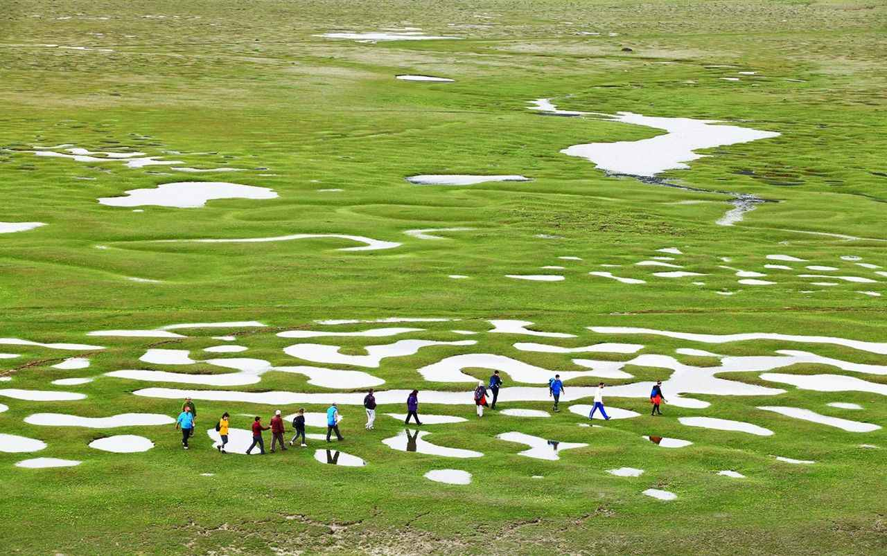

Sakarya’nın Taraklı ilçesinde bulunan ve bin 100 metre yüksekliğe sahip olan Karagöl Yaylası şehrin en büyük yaylalarından biri olma özelliğine sahip. Şehir merkezine yaklaşık 100 kilometre uzaklıkta olan yaylanın çevresi köknar, kayın ve çam ağaçlarının kapladığı yoğun orman ile çevrili.
Kule, İzmit Körfezi’ne hâkim bir konumda yer almakta ve günümüzde hala saatleri göstermektedir. Çevresi ise halka açık düzenlenmiştir ve özellikle turistlerin uğrak noktasıdır.
